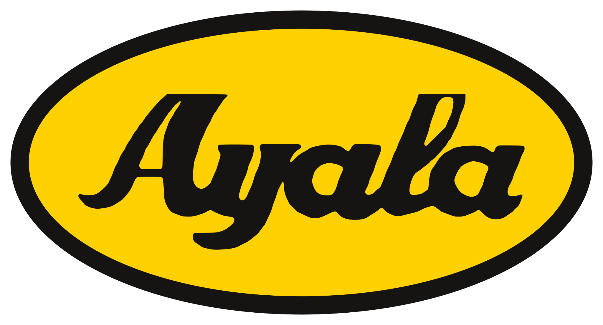
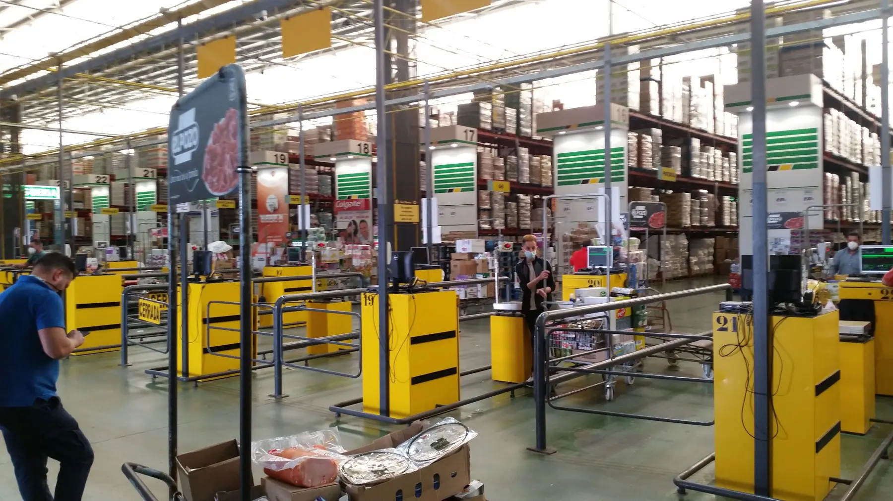
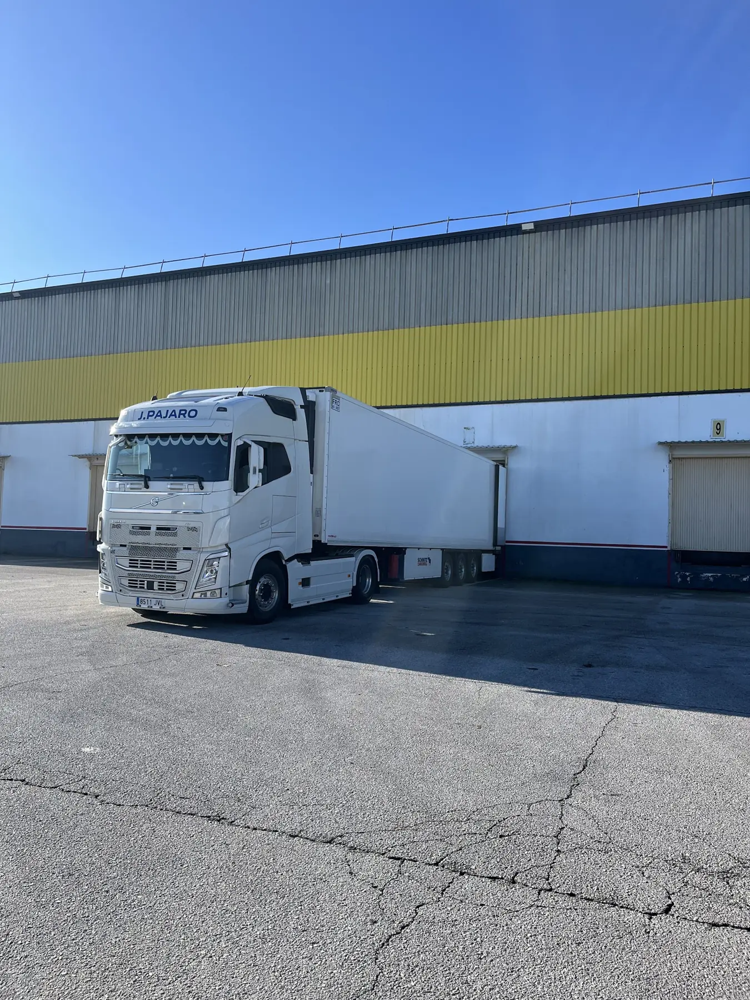
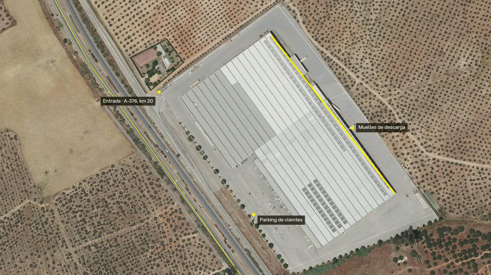
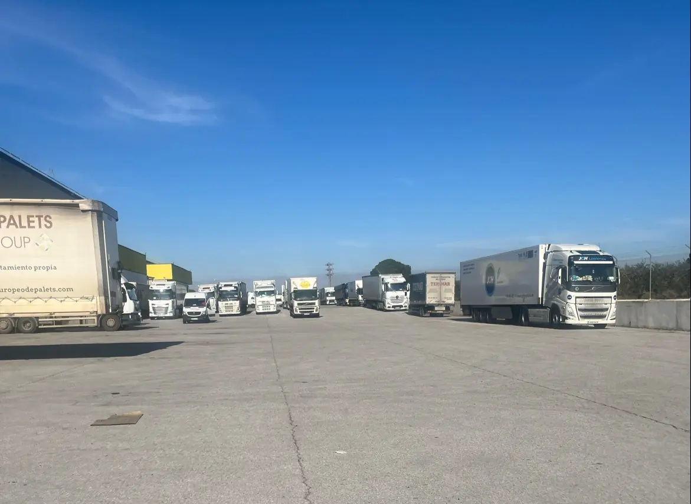
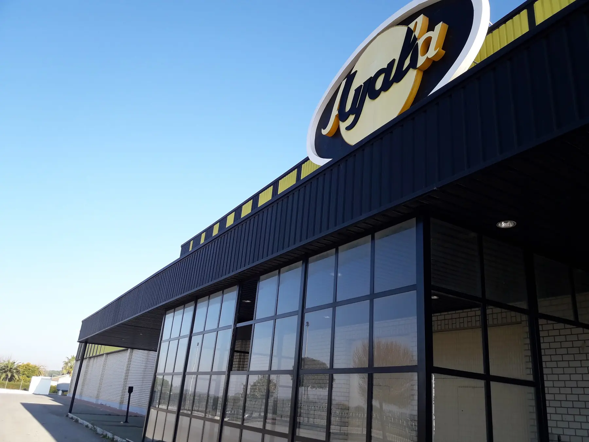
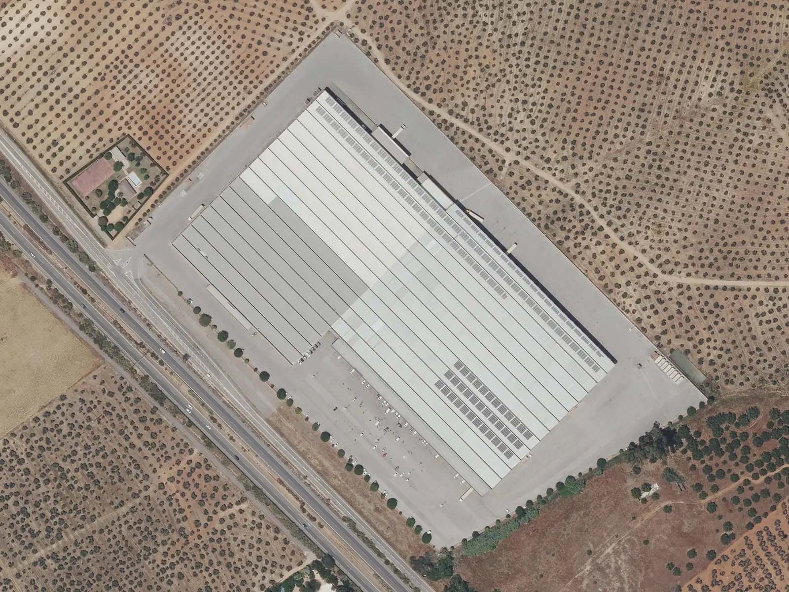

Medalla de Oro de la provincia
Por nuestra labor emprendedora en ayuda al pequeño comercio
- Sevilla
- Pequeño comercio

Tu mayorista de confianza desde 1960
Alimentación, bebidas, droguería y perfumería al por mayor en Utrera, Sevilla
Abastecemos a tiendas de barrio, bares, restaurantes y comercios de toda la provincia. Alimentación, bebidas, droguería y perfumería bajo un mismo techo, en el km 20 de la autovía entre Sevilla y Utrera
Ver los productosAceite, legumbres, conservas, despensa, desayuno y charcutería para reponer tu negocio en una sola visita
Tu marca de confianza desde 1960
Además de las primeras marcas, tenemos la nuestra. Envasamos legumbres, aliñamos aceitunas y llenamos garrafas de aceite con el nombre de la familia en la etiqueta
Pregunta por un productoAceites Alberto

Cada negocio necesita una cosa distinta. Llámanos o escríbenos y te decimos si lo tenemos, en qué formato y a qué precio
Desde entonces, abasteciendo al comercio de Sevilla
Por nuestra labor emprendedora en ayuda al pequeño comercio
Ayala, tu marca de confianza desde 1960
Placas fotovoltaicas en la cubierta de la nave, con ayuda de los fondos europeos
Formamos parte de uno de los grandes grupos de distribución alimentaria
Un cash & carry parece solo una nave llena de palés. Pero de él depende que el bar abra con todo a punto y que la tienda del barrio tenga la estantería llena. Por eso cuidamos el surtido, el precio y una marca que lleva nuestro nombre

De lunes a viernes, de 9:00 a 14:00 y de 16:00 a 18:00. Los sábados no se descarga. Si vienes de lejos, calcula llegar con margen dentro de ese horario
Entra por el acceso del km 20 de la A-376 y rodea la nave hasta la zona de muelles, en la fachada trasera. Presenta la documentación del pedido en recepción y te asignaremos muelle
El recinto tiene sitio de sobra para aparcar el camión, y hay un pequeño bar con bocadillos y café
Cerramos el 7 y 8 de septiembre, fiestas locales de Utrera, y los festivos nacionales
Desde Sevilla, en dirección a Utrera. Estamos a unos 20 km de la ciudad
La entrada está a pie de autovía, junto a la vía de servicio
El aparcamiento de clientes está bajo la arboleda, junto a la puerta principal
Coge tu carro, recorre la nave y carga la mercancía al salir de caja


A tu lado por calidad y precio. Cada folleto trae una selección de productos con descuentos importantes en cartelería. Ven a la nave y pregunta por las ofertas en vigor

Sin vueltas. Si tienes una duda, quieres saber si tenemos un producto o vas a venir por primera vez, llámanos o escríbenos
| Lunes | 8:00 – 20:00 |
|---|---|
| Martes | 8:00 – 20:00 |
| Miércoles | 8:00 – 20:00 |
| Jueves | 8:00 – 20:00 |
| Viernes | 8:00 – 20:00 |
| Sábado | 8:00 – 14:00 |
| Domingo | Cerrado |
Lunes a viernes
9:00 – 14:00 y 16:00 – 18:00
7 y 8 de septiembre
Festivos nacionales
Autovía A-376, km 20 · salida 21
41710 Utrera, Sevilla
955 867 848
Fax 954 862 997
informacionweb@hermanosayala.es

Entre olivos, a medio camino entre Sevilla y Utrera. Abrimos de lunes a sábado desde las 8 de la mañana